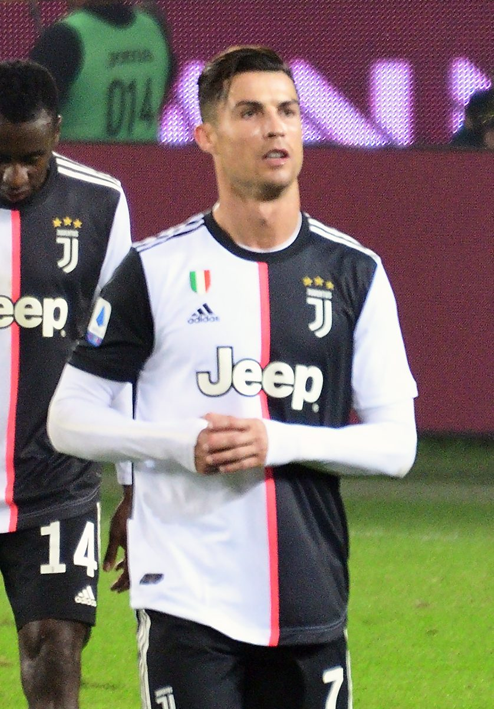

Мальчик с Мадейры, переписавший историю футбола: жизнь и наследие Криштиану Роналду
От лачуги под жестяной крышей в Фуншале и операции на сердце в подростковом возрасте — до пяти кубков Лиги чемпионов и более 980 голов за карьеру

Летом 1997 года 12-летний мальчик сел на самолет, улетавший с Мадейры в Лиссабон. Он оставил семью позади, имея при себе лишь дорожный чемодан и трансферное соглашение между клубами «Насьонал» и «Спортинг» на скромную сумму в 1500 фунтов. В столице над его островным акцентом откровенно насмехались; по ночам в интернате академии он задыхался от слез, неся на детских плечах бремя надежд семьи, балансировавшей на грани нищеты. Спустя почти три десятилетия этот мальчик стоит на вершине мирового футбола как самый результативный бомбардир в задокументированной истории игры.
Криштиану Роналду душ Сантуш Авейру родился 5 февраля 1985 года в приходе Сан-Педру города Фуншал, а вырос в горном квартале Санту-Антониу. Его мать, Мария Долореш душ Сантуш Вивейруш Авейру, от зари до зари трудилась поваром и уборщицей. Отец, Жозе Диниш Авейру, был муниципальным садовником и по совместительству администратором формы в местном любительском клубе «Андоринья». Диниш вернулся с колониальной войны в Анголе с тяжелейшей душевной травмой и до конца дней боролся с хроническим алкоголизмом. В строгой католической семье Криштиану делил одну комнату со старшим братом Угу и двумя сестрами, Элмой и Лилианой Катией. По линии прабабушки Изабел да Пьедаде в его жилах течет кровь уроженцев острова Сан-Висенте в Кабо-Верде. Второе имя — Роналду — сыну дал отец в честь президента США Рональда Рейгана. Еще до его рождения Долореш всерьез подумывала прервать беременность, ведь семья едва сводила концы с концами, однако местный врач наотрез отказался делать операцию.
Футбол стал для него единственным убежищем. С 1992 по 1995 год Роналду выступал за «Андоринью», затем провел два сезона в «Насьонале». В академии лиссабонского «Спортинга» испытания посыпались одно за другим. Во время учебы в школе Тельейраш (Escola EB2 de Telheiras) он швырнул стул в учителя, который издевался над его мадейрским произношением, и был отчислен. В 14 лет Криштиану заключил пакт с матерью и своим куратором в «Спортинге» Леонелом Понтишем (Leonel Pontes): бросить школу после шестого класса и посвятить зеленый газон каждой минуте бодрствования. Но уже год спустя рутинный медосмотр выявил тахикардию — нарушение сердечного ритма, грозившее перечеркнуть карьеру атлета до ее начала. Подростку провели лазерную катетерную абляцию, прижегши проводящие пути сердца. Его выписали в тот же день, а спустя считанные дни он уже вернулся к полноценным тренировкам.

Из Лиссабона в Манчестер: бремя седьмого номера
Главный тренер «Спортинга» Ласло Бёлёни (László Bölöni) выпустил 17-летнего Роналду на поле 14 августа 2002 года в квалификации Лиги чемпионов против миланского «Интера». А уже 7 октября 2002 года португалец заявил о себе в полный голос в чемпионате страны, оформив дубль в ворота «Морейренсе» (3:0). Менее десяти месяцев спустя, 6 августа 2003 года, «Спортинг» принимал «Манчестер Юнайтед» на матче открытия стадиона «Жозе Алваладе». В тот вечер Роналду буквально растерзал оборону манкунианцев, а лиссабонцы победили 3:1. Сэр Алекс Фергюсон отказался покидать арену, не подписав контракт с юным дарованием. 12 августа 2003 года «МЮ» выложил за него 12 миллионов фунтов — рекордную по тем временам сумму для английского тинейджера.
Криштиану просил 28-й номер, под которым играл в Лиссабоне, но Фергюсон вручил ему легендарную «семерку», освободившуюся после ухода Дэвида Бекхэма и прославленную Джорджем Бестом и Эриком Кантона. 16 августа 2003 года Роналду вышел на замену против «Болтона» на полчаса, и этот 30-минутный отрезок заставил Беста назвать его игру «без сомнения, самым захватывающим дебютом», который он когда-либо видел. Первый гол за «красных дьяволов» португалец забил 1 ноября 2003 года «Портсмуту», а в победном финале Кубка Англии 2004 года против «Миллуолла» именно он положил начало разгрому.
Критический перелом случился на чемпионате мира 2006 года в Германии. После удаления Уэйна Руни в четвертьфинале английские таблоиды объявили Роналду главным злодеем нации: в сезоне 2006/07 каждый стадион Премьер-лиги встречал его оглушительным свистом. Вместо того чтобы сломаться, португалец наколотил 20 мячей в чемпионате, вернув «Юнайтед» чемпионский титул после четырехлетней засухи. В кампании 2007/08 Роналду забил феноменальные 42 гола во всех турнирах, выиграл финал Лиги чемпионов в Москве у «Челси» и в 23 года забрал свой первый «Золотой мяч».

Мадридские рекорды и европейский триумф
В июле 2009 года мадридский «Реал» заплатил рекордные на тот момент 94 миллиона евро (80 млн фунтов), чтобы привезти Роналду на «Сантьяго Бернабеу». За девять сезонов в Мадриде он в корне переписал представления о результативности нападающих: 451 гол всего в 438 официальных матчах! В составе «сливочных» он завоевал четыре кубка Лиги чемпионов (включая исторический хет-трик с 2014 по 2018 год), два титула Ла Лиги и еще четыре «Золотых мяча». В победной европейской кампании 2013/14 он установил абсолютный рекорд турнира, наколотив 17 мячей за один розыгрыш.
Выступления за сборную окончательно утвердили его статус иконы несгибаемости. Пролив море слез 19-летним юношей в домашнем финале Евро-2004 против Греции, в 2008 году Роналду стал капитаном национальной команды. На Евро-2016 во Франции тяжелая травма колена заставила его в слезах покинуть поле уже в первом тайме финала против хозяев. С перебинтованной ногой на бровке он провел весь второй тайм, на равных руководя командой бок о бок с Фернанду Сантушем, пока точный дальний выстрел Эдера в овертайме не принес Португалии первый в ее истории крупный международный трофей. Позже он привел команду к победам в Лиге наций УЕФА в 2019 и 2025 годах.
От Эр-Рияда в вечность
После завоевания двух скудетто и Кубка Италии в составе «Ювентуса» (за который он забил 101 мяч) и эмоционального возвращения на «Олд Траффорд», в январе 2023 года Роналду подписал контракт с клубом саудовской Про-лиги «Аль-Наср». На Ближнем Востоке он становился лучшим бомбардиром чемпионата Саудовской Аравии в 2024 и 2025 годах, а в 2026 году привел «Аль-Наср» к чемпионскому титулу в качестве капитана.
В ноябре 2026 года Роналду подвел черту под своей 23-летней международной карьерой в сборной Португалии, оставив за собой непостижимые мировые рекорды: 234 матча, 146 голов и 141 победа в футболке национальной команды. Суммарно за взрослые клубы и сборную на его счету более 980 официальных забитых мячей в более чем 1300 матчах. За пределами поля журнал Forbes оценил его состояние в 2026 году в 1,2 миллиарда долларов, а суммарная аудитория в социальных сетях превысила один миллиард подписчиков. Путь, начавшийся на асфальтовых переулках Санту-Антониу, превратился в самый монументальный памятник железной дисциплине и несгибаемой человеческой воле в истории спорта.